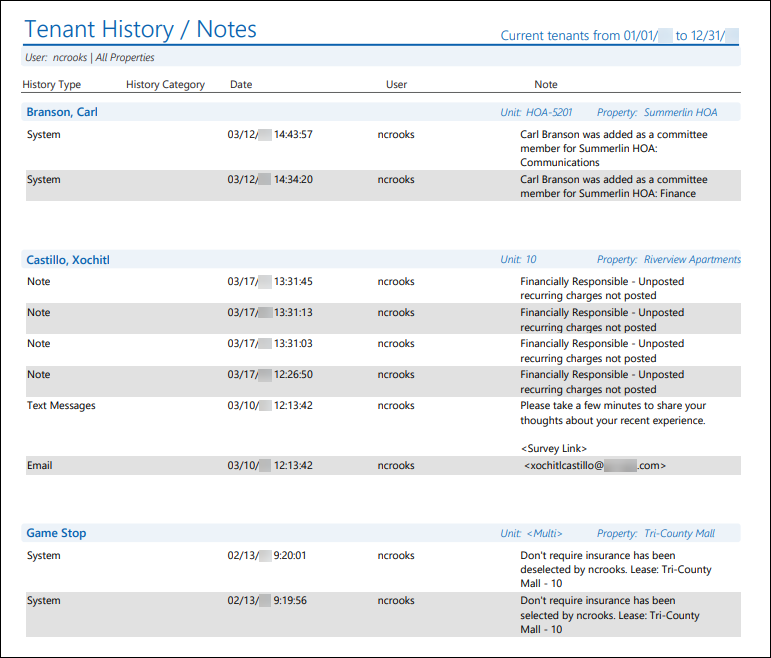
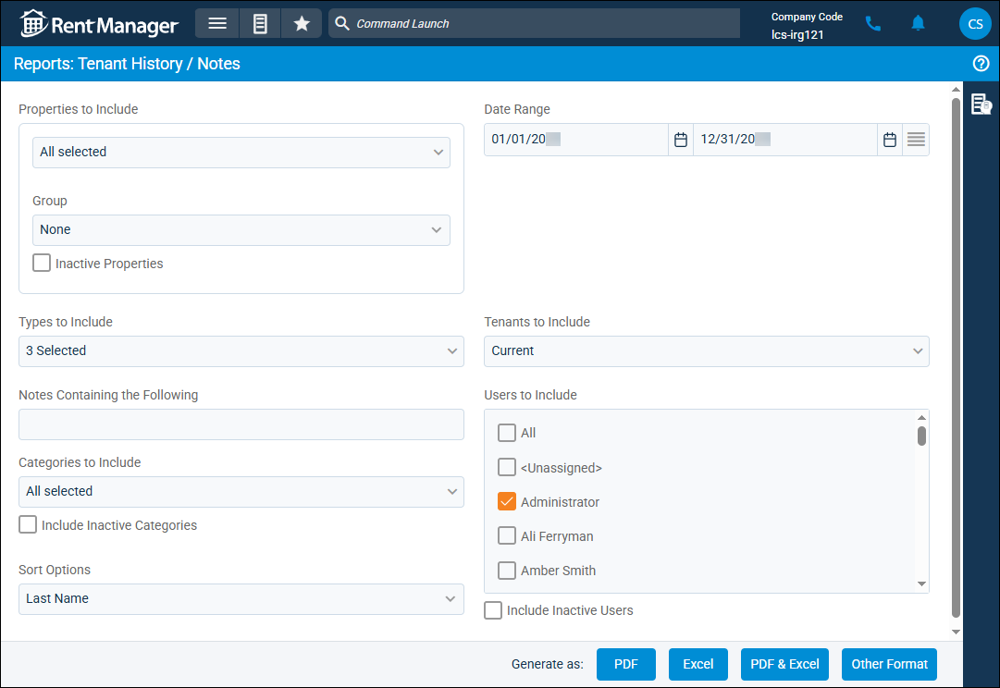

Source: https://rmxhelp.rentmanager.com/Topics/Express/Other/Reports/Tenant-History-Notes.htm
Tenant History/Notes (Report)
The Tenant History/Notes report allows you to view tenant and history/note information associated with the Date Range or containing a specific key word for any entity that matches your specified criteria.
The filters can be used in a variety of ways to determine what displays in the report. For example, the filters can be used to view only history/note items categorized as late notices so you can track if tenants are being notified when they become delinquent on a payment.
Related Privileges
| Group | Privilege | Column |
|---|---|---|
| Letter/Email Templates/Reports/Packets | Run reports | Enabled |
Additionally, on the Reports tab, you must have access to Tenant History/Notes.
For more information, refer to Control User Access.
To view the Tenant History/Notes report, do the following:
-
Go to
 arrow_forward Rental Info arrow_forward Tenants arrow_forward Tenant History/Notes.
arrow_forward Rental Info arrow_forward Tenants arrow_forward Tenant History/Notes.
The Reports: Tenant History/Notes page displays. -
Adjust the report options as desired. Each option is described below.
-
Generate the report in your desired file format(s).
Related Preferences
Reports may look different depending on whether or not the Use modernized report style system preference is enabled. For more information, refer to General Report Options (System Preferences).

Report Options
The report options described below determine what data displays in the report.

Properties to Include
Select each property or a property Group to be included in the report.
More Information
This field populates only with the properties to which you have access. Your access to properties can be managed from your user account or on the property's details page. For more information, refer to Limit Access to a Property.
Optionally, check Show Inactive Properties to include properties that are no longer active.
Date Range
Enter or select the date range to determine the data that displays in the report.
In the Date Range section, set the From and To dates for which the report should examine data.
These fields automatically populate with today’s date. Enter a different date or select a date from the calendar. Alternatively, adjust the dates using the available preset buttons or click  to open more options for setting a date range.
to open more options for setting a date range.
Types to Include
Check each option to include history/notes of that Type in the report.
Tenants to Include
Select each desired option to determine which accounts display in the report results.
| Option | Description |
|---|---|
|
Current |
All tenants with a Move In date on or before the report date and with either no Move Out date or a Move Out date after the selected date display. |
|
Past |
All tenants with a Move Out date set before the selected date display. |
|
Future |
All tenants with a Move In date that is undefined or after the selected date display. This option must be selected for prospects to display. |
Notes Containing the Following
Type in the field to narrow the report results to match the entered criteria. For example, entering noise filters results to display only history note items that include the word noise in the note's Note, Result, or Category fields.
Users to Include
Select each user to display tenant and/or prospect history/notes created by that user. Optionally, check Include Inactive Users to include user accounts no longer marked as active.
Categories to Include
Check each history/note category to filter the report results so only history/notes assigned to the selected category display. To view history/notes that are not assigned a Category, select <Unassigned>. For more information, refer to History Categories (Page).
Sort Options
Select one of the following options to determine how the report results are sorted:
| Option | Description |
|---|---|
|
Address |
Accounts are sorted alphanumerically by their Default address. Accounts with no address display first in the list. |
|
Last Name |
Accounts are sorted alphabetically by their Last Name. Accounts marked as Company are sorted alphabetically by Company Name. |
|
Property, Unit |
Accounts are first sorted alphanumerically by Property name. Accounts with leases at multiple properties display first in the list. Accounts are further sorted alphanumerically by Unit name. |
|
Unit |
Accounts are sorted alphanumerically by Unit name. Accounts with leases at multiple units display first in the list. Accounts are further sorted alphanumerically by Property name. |
Report Results
The report results are described below including, if applicable, section, column, and subreport descriptions.
Report Header
The report header displays the report name and key information selected in the report options, such as date information and which properties were examined in the report.
Column Descriptions
The columns that display in the report are described below.
| Column | Description |
|---|---|
|
Date |
The date and time that each history/note was entered in Rent Manager. |
|
History Category |
The group that the user chose for each history/note. |
|
History Type |
The system generated name used to identify what kind of history/note is being viewed. For example, Visit displays when a visit note was created to record a prospect's visit to one of your units. |
|
Note |
The contents of each history/note, as entered in the Note field on History Details. |
|
User |
The username of the user who created the history/note. If the history/note was created automatically by Rent Manager, <Unassigned> displays. |